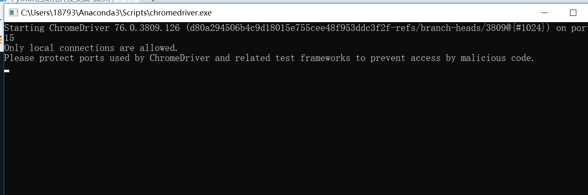

Contents
网页自动化开发¶
Python中使用Selenium实现网页自动化开发，主要介绍Selenium的概念、开发环境搭建、Selenium模拟用户打开浏览器并实现自动操控浏览器的网页，如单击、鼠标拖拉和文本输入等操作。
Selenium主要支持IE、Mozilla Firefox、Safari、Google Chrome和Opera等主流浏览器。
Selenium发展至今，不仅在自动化测试和自动化流程开发的领域上占据着重要的位置，而且在网络爬虫上也被广泛使用。
安装Selenium¶
pip install selenium
Selenium安装完成后，我们在CMD环境下验证Selenium是否安装成功。在CMD里输入“python”并按回车，就会进入Python的交互模式。在交互模式下依次输入以下代码：
import selenium
selenium.__version__
Out[3]:
'3.141.0'
在浏览器上访问http://npm.taobao.org/mirrors/chromedriver/并找到v2.40所在位置，进入v2.40并单击chromedriver_win32.zip的下载链接。把下载的chromedriver_win32.zip进行解压，然后双击运行chromedriver.exe，查看chromedriver的版本信息.
注意一定要根据Chrome的版本选择chromedriver.exe文件

写以下代码来验证Selenium是否能自动启动并控制Google Chrome。
#!/usr/bin/env python
# -*- coding:utf8 -*-
# @auther: 18793
# @Date： 2020/6/22 22:00
# @filename: chapter01.py
# @Email: 1879324764@qq.com
# @Software: PyCharm
from selenium import webdriver
# 设置变量url,用于浏览器访问
url = "https://www.baidu.com/"
path = r'C:\Users\18793\Anaconda3\Scripts\chromedriver.exe'
browser = webdriver.Chrome(executable_path=path)
# 打开浏览器并访问百度网址
browser.get(url)
安装三大浏览器驱动driver
1.chromedriver 下载地址：https://code.google.com/p/chromedriver/downloads/list
2.Firefox的驱动geckodriver 下载地址：https://github.com/mozilla/geckodriver/releases/
3.IE的驱动IEdriver 下载地址：http://www.nuget.org/packages/Selenium.WebDriver.IEDriver/
#!/usr/bin/env python
# -*- coding:utf8 -*-
# @auther: 18793
# @Date： 2020/6/22 22:10
# @filename: chapter02.py
# @Email: 1879324764@qq.com
# @Software: PyCharm
from selenium import webdriver
# 开启火狐浏览器
browser = webdriver.Firefox()
path = r'C:\Users\18793\Anaconda3\Scripts\geckodriver.exe'
browser = webdriver.Firefox(executable_path=path)
browser.get("http://www.baidu.com/")
IEDriverServer的版本号和Selenium的版本号一定要一致
from selenium import webdriver
path = r'C:\Users\18793\Anaconda3\Scripts\IEDriverServer.exe'
browser = webdriver.Ie(executable_path=path)
browser.get('http://www.baidu.com/')